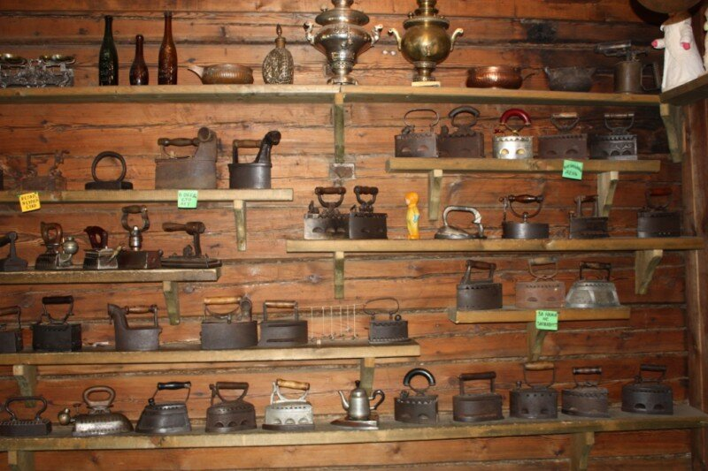

Одной из проблем, стоящих перед бизнесом, в частности производящими “такую же продукции как все конкуренты” , например, мебельными фабриками, является поиск, нахождения своего позиционирования, своей уникальности, своей идентичности.
Можно “высасывать из пальца”: креативить, нанимать консультантов по маркетингу, проводить мозговые штурмы, делать SWOT анализ. Но всё придуманное, чаще всего надуманное, как следствие - не настоящее, обертка, а она шелуха как известно, как бы не была крепко приклеена, рано или поздно отвалится.
Конкурентное преимущество, чтобы быть настоящим, истинным должно быть в гармонии со всеми аспектами бизнеса. Гармония - это равновесие между всеми элементами бизнеса вне зависимости от изменчивых смыслов. Найти гармонию бизнеса и окружающего его мира можно, только постаравшись понять их; поняв место бизнеса в разных пространствах, его смысл в глазах всех, кто соприкасается с бизнесом.
С этой точки зрения бизнес - это какая то уникальная гармония между всеми объектами и субъектами бизнеса, это некий “свой” порядок.
Непростая задачка. Неправда ли?!
Одним из источников поиска понимания этой гармонии, поиска бизнесом себя, своего смысла является его (бизнеса) История. Именно с большой буквы История, то есть истории создания и развития бизнеса с самых разных ракурсов, которые все вместе и образуют Историю.
Инструментом создания такой истории может быть Музей Истории бизнеса.
Большинство будет посещать этот музей просто из желания что-то узнать, но собственникам и топ-менеджерам бизнеса хороший Музей истории бизнеса позволит ощутить искомую гармонию, почувствовать как она меняется. Ведь Музей будет повествовать о гармонии между сотрудниками и продукцией, между технологиями и обществом, между продажами и дилерами. В этот музей они будут ходить в поисках памяти и истоков идентичности бизнеса, которая, подчеркну, не обязательна всегда была прекрасна.
Подлинный (хороший, правильный) музей занимается собиранием, хранением, изучением и исследованием материалов.
По моему мнению, Музей должен рассказывать посетителям следующие истории (изменение по времени):
1) Владельцы и их отношения между собой
2) Помещения, оборудование и техника
3) Технологии производства
4) Продукция (так и вижу выставку комнаты с топ-продаж каждого года)
5) Сотрудники
6) Поставщики и дилеры (ключевые клиенты)
7) Финансовые и количественные показатели
Ну и конечно же, в Музее Истории бизнеса должны и тайные, и секретные комнаты. И конечно же ритуалы переноса экспонатов (информации) из этих комнат в доступные для всех посетителей помещения.
P.S. Если кто решится, готов поучаствовать в реализации этой идеи.